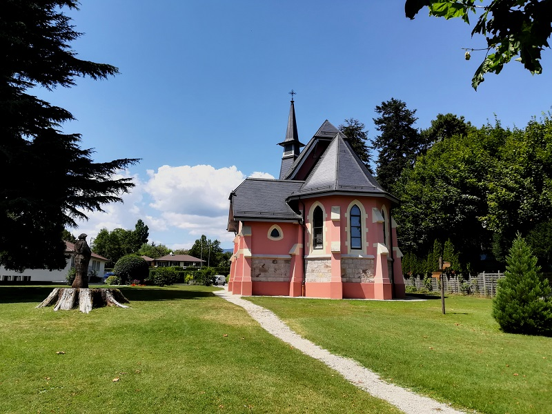
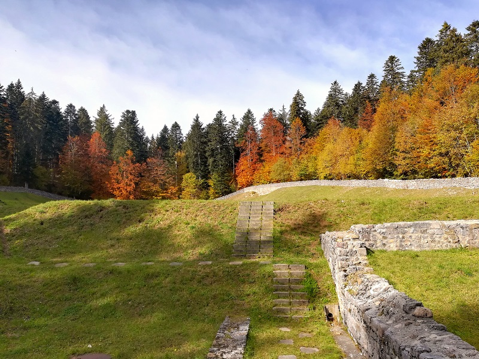

Welcome to the exploring portal!
As of now, the sections just contain simple explanations, although subpages are slowly added as time passes.
|  |
|---|
Resources Section |
Whether it's for the map, or for other projects related to exploring, I always do research. By clicking on the resources section you can see everything I use for exploration-related buisiness. It's a goldmine of goldmines if you will. To access it, click on Saint Robert's Church, or click here. |
|  |
|---|
Historical Section |
Anything related to local history. By local I mean everything in a 100-120km radius from Point 0 (France isn't that well covered). To access, click on the ruins of Notre Dame d'Oujon, or click here. |